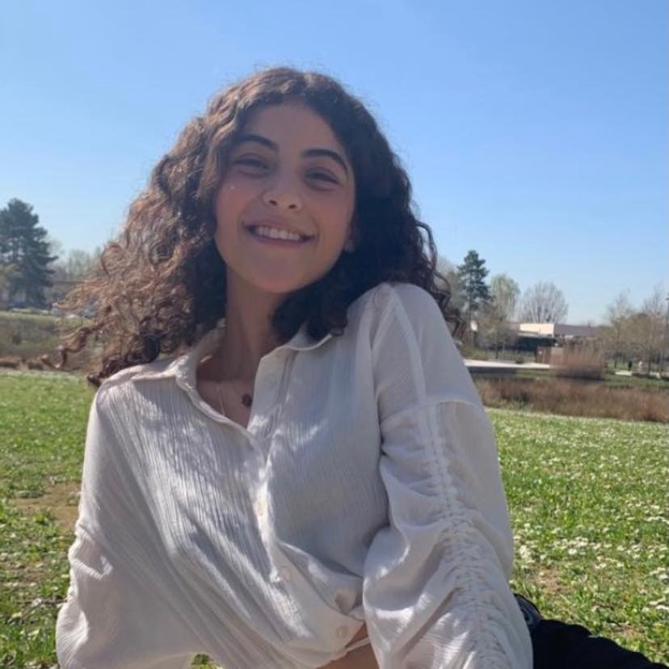

Hi, I'm Meriem Hikmi, Welcome to my profile!
Hi, I am Meriem, a 20 year old student at ESSEC Business School, in the thrid year of the BBA program. I am from Morocco and now I live here in France, in Paris. I love movies, fashion (and sewing) and art, but also, spending time with my friends. Fun fact about me, I am a bit of a nerd and I love the Marvel Cinematic Universe
Check out my Linked'in profile right below!
Meriem's Linked'in profileüé•Moviesüé•
I have always loved movies. Eversince I can remember, I was always watching movies. I became a huge fan of the world of cinematography, studying about the making of a film and the release of it. How the cinematographers think and go from a script to a whole movie! I love watching the ceremonies for the different movie festivals around the world, such as The festival of Cannes or the Academy Awards. Told you I was kind of a nerd!
I have an instagram page for movies and cinema. Check it out!
My instagram page for movies!üì∑Photography and montagesüì∑
Photography has been one of my passions for a long time. Creating pieces of art is a feeling that I find very rewarding and self-motivating. Since I am a sucker for cinema, I love making short films and montages. It helps me dive entirely into my passion.
üìöReadingüìö
Reading has been a part of my life since my childhood. Growing up, I loved reading classical novels, like novels from Jane Austen. Another thing, I also love reading Bd's and comic books, but also more realistic books, like novels or biographies.
Here are some books that I loved reading!


üë†Fashionüë†
I am a huge fan of fashion and clothes. I love trying on new trends and styles and reading about fashion icons. One thing that I also love is finding vintage pieces of clothing that I think are very cute and redesigning them to make them at my taste. I also learned to sew which was amazing because I always wanted to learn. Well, I am still a novice so I can't make a gown yet, but I am progressing slowly.
I have chosen to put one of my inspirations regarding fashion and self-care, Lena Situations. She is a french youtuber and influencer who began her carreer doing fashion reviews and self care motivation speeches. She has taught me so much and I look up to her a lot:
Lena SituationsüåéTravel‚úàÔ∏è
I love traveling and discovering the world. I am from Morocco and I have lived there my whole life, so coming to France was kind of a big travel for me, and also one of the best experiences of my life. I have also traveled to Spain, the USA and to the Netherlands in the past and I have to say that these travels have been unforgettable. I also lived for 5 months in Singapour, which was amazing. This country is so beautiful, I fell in love with it so much. I would love to go back there in the future.
Here are some pictures I took from my trips to keep as a souvenir!